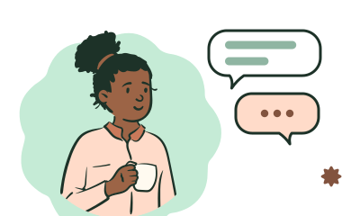
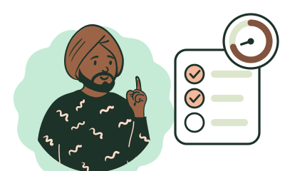
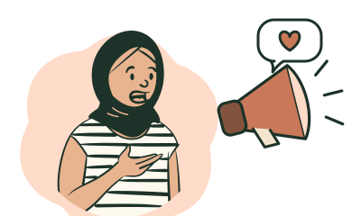

Najma Collective
Online English lessons with a teacher you choose
Najma is a teacher-led collective offering private online English lessons for adults. You can study regularly with a teacher you choose or book a lesson to prepare for a particular conversation or piece of work.
Our work connects English teaching with a commitment to solidarity and fair conditions for teachers. Alongside private lessons, we offer programmes for organisations and a free Solidarity Café where people can meet through conversation.
Private lessons: £20 for 55 minutes.
sellSee lessons and pricesperson_searchFind a teacher
For organisations: Arrange a free consultation
Meet Najma at the Solidarity Café
The Solidarity Café brings people together for an informal online conversation about solidarity and social change. A facilitator helps the discussion along, and you are welcome to join in or spend time listening.
The Café is free during the pilot and usually lasts 55–75 minutes. English is our shared language, with intermediate English (around B1 or above) recommended. You can attend before booking any lessons.
Next session: [confirmed topic]
When: [confirmed date and time with time zone]
Hosted by: [confirmed facilitator]
mailAsk about the next CaféLessons and prices
Private lessons
£20 for 55 minutes.
Your private lessons can follow a longer-term interest or focus on something you are preparing for now. You and your teacher agree where to begin, whether that means improving everyday conversation or getting ready for a meeting. Book one lesson at a time and continue with the same teacher for as long as it suits you.
Some teachers also offer 25-minute lessons for £10. If you would like to meet a teacher first, look for a free 20-minute introductory appointment to discuss your English and ask about their lessons.
person_searchFind a teacherevent_availableFind a free introductory appointment
What would you like to study?
Explore the teaching areas below, then check the profiles to find a teacher with relevant experience.

General English
Become more fluent in everyday conversation and work on understanding spoken English. Your teacher can help you practise new language through topics that interest you, with reading and writing included where useful.
Find a General English teacherBusiness and professional English
Practise the English you use at work, from contributing to meetings to writing clear professional emails. Lessons can help you prepare a presentation or explain a proposal, with feedback on how clearly you communicate.
Find a Business English teacherAcademic English
Develop your academic writing and take a more active part in university discussions. You can practise explaining your research or work through an argument in an essay with your teacher.
Find an Academic English teacher
IELTS preparation
Practise IELTS speaking and writing with feedback linked to the assessment criteria. Each teacher’s profile explains which test versions and components they cover, so you can find suitable preparation.
Find an IELTS teacher
English for advocacy and organising
Practise explaining a campaign or an issue you care about to a wider audience. Your lessons can help you prepare a public statement or rehearse a discussion with partners.
Find a teacher for advocacy and organisingExperienced English teachers
Najma brings together experienced English teachers whose work includes supporting Palestinian learners in demanding circumstances. Read their profiles to learn about their professional backgrounds and how they teach.
[Confirmed teacher profiles to be added before publication.]
person_searchFind a teacher
Keep learning with Najma
As your teacher gets to know you, lessons can build on what you have already learnt and adapt as your priorities change.
If you decide to learn with another Najma teacher, they can pick up from your earlier lessons so you can continue making progress.
English for your organisation
We offer English programmes for organisations involved in activism and solidarity, as well as broader business English and professional communication training. A programme might help your team explain a campaign to international partners or take a more active part in meetings.
A free consultation gives you time to discuss your organisation’s work with the teacher who would lead the programme. They will then prepare a written proposal for you to review.
Group sessions cost £10 per learner for 55 minutes, with at least four participants from your organisation. Private lessons cost £20 per learner for 55 minutes. Your proposal confirms the total fee and booking terms, and the lead teacher normally designs and teaches the programme.
calendar_add_onArrange a free consultationcorporate_fareExplore programmes for organisations
A collective run by its teachers
Najma’s teachers have an equal say in how the collective runs and retain professional control over their teaching. This gives them room to choose methods and materials that suit the people they teach.
During the pilot, 80% of paid revenue goes to the teacher delivering the work.
The remaining 20% supports the collective’s shared roles and includes a proposed contribution to Al Manar. The proposed 5% contribution to Al Manar and the public relationship begin once Al Manar approves the arrangement. Revenue shares are calculated after refunds and before payment-processing charges.
About Najma